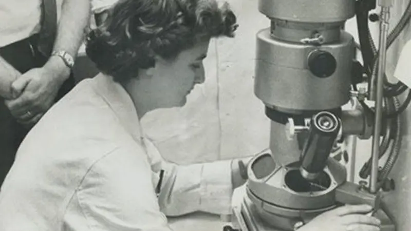

Rosalind Franklin è una fisica e chimica britannica, protagonista fondamentale nello studio del DNA.
È uno dei casi più noti di “effetto Matilda”, cioè la mancata attribuzione del merito scientifico alle donne.
Nel laboratorio del King’s College di Londra ottenne immagini estremamente precise del DNA tramite diffrazione a raggi X.
La sua celebre “Foto 51” fu decisiva per la scoperta della doppia elica, ma venne utilizzata senza il suo consenso.
La sua storia
Rosalind lavora al King’s College e studia il DNA con i raggi X.
Wilkins, Watson e Crick utilizzano i suoi dati senza permesso.
La scoperta della doppia elica viene pubblicata su Nature.
Rosalind continua gli studi sui virus al Birkbeck Laboratory.
Il suo contributo viene riconosciuto solo anni dopo.
Muore nel 1958 per tumore ovarico legato ai raggi X.